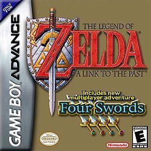
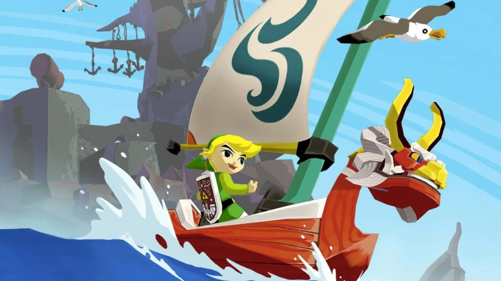

Historia

The Legend of Zelda es una serie de videojuegos de fantasía y de acción-aventura. La saga ha sido desarrollada y publicada por Nintendo. Fue creada por el famoso y reconocido diseñador de videojuegos, Shigeru Miyamoto, junto con Takashi Tezuka. El modo de juego de la saga consiste en una mezcla de acción, aventura, puzzles, rol y ocasionalmente plataformas, sigilo y carreras. La serie se centra en un protagonista: Link, el único jugable en toda la saga. A menudo, a Link se le da la tarea de rescatar a la Princesa Zelda de las garras de Ganondorf (principal antagonista de la saga), en Hyrule (principal lugar en que desarrolla la saga). Sin embargo, han aparecido otros antagonistas, como Vaati o El Heraldo de la Muerte. La historia implica a una reliquia sagrada conocida como Trifuerza, un conjunto de tres triángulos de oro, con las más importantes omnipotencias.
A partir del lanzamiento del primer juego en 1986, The Legend of Zelda ha logrado una notable popularidad acompañada de críticas favorables en la industria de los videojuegos, traducidas en un cuantioso éxito comercial a nivel internacional, hasta abril de 2020 se calculan más de 113 millones de copias vendidas de sus juegos; para las ventas específicas de cada título de la franquicia, véase la sección Comercial. La continuidad cronológica de los juegos ha sido objeto de debate con el transcurso del tiempo, debido a la incertidumbre en la identificación de los vínculos entre ciertos títulos. Nintendo publicó la cronología definitiva de The Legend of Zelda en el libro Hyrule Historia (2011), en la cual se explica que existen tres líneas de tiempo diferentes, las cuales dependen primordialmente de Link.
Juegos
_gold.png) |
.png) |
 |
| The Legend of Zelda | Zelda II: The Adventure of Link | The Legend of Zelda: A Link to the Past |
 |
||
| The Legend of Zelda: Link's Awakening | The Legend of Zelda: Ocarina of Time | The Legend of Zelda: Majora's Mask |
|  |  |
|
| The Legend of Zelda: Oracle of Seasons/Oracle of Ages | The Legend of Zelda: Four Swords | The Legend of Zelda: The Wind Waker |
| The Legend of Zelda: Four Swords Adventures | The Legend of Zelda: The Minish Cap | The Legend of Zelda: Twilight Princess |
| The Legend of Zelda: Phantom Hourglass | The Legend of Zelda: Spirit Tracks | The Legend of Zelda: Skyward Sword |
 |
||
| The Legend of Zelda: A Link Between Worlds | The Legend of Zelda: Tri Force Heroes | The Legend of Zelda: Breath of the Wild |
Cronología

La cronología exacta del universo Zelda había sido uno de los debates más intensos entre los aficionados a la saga. Como la serie progresaba, y sacaron más juegos, el orden exacto de la cronología de la saga se convirtió en general, complicada y objeto de largas discusiones. Pese a que Nintendo dio a conocer la línea cronológica oficial en el libro The Legend of Zelda: Hyrule Historia en 2011, el tema sigue disputable y las controversias continúan.

En una entrevista realizada por Nintendo Dream a Eiji Aonuma, a finales de 2006, este mencionó que existían dos universos diferentes en la saga: la división en la cronología comienza en el argumento de Ocarina of Time, cuando en las últimas escenas del mismo, Link es enviado de vuelta en el tiempo por la Princesa Zelda. Siendo nuevamente un niño, se reúne con Zelda y se describe un futuro alternativo en el cual Ganondorf ha sido capturado por sabios que lo encierran en el Reino Crepuscular; estos datos permitieron deducir que el argumento de Twilight Princess (2006) ocurre un siglo después de los acontecimientos relatados en Ocarina of Time, etapa en que Link todavía es un niño. Mientras tanto The Wind Waker se encontraría en la segunda cronología del personaje, en la que Link ya es un joven adulto, cientos de años después de que salvara a Hyrule en Ocarina of Time. En 2011 Aonuma reveló que todos los juegos partían de una única cronología.
A finales de 2011, con motivo del 25 aniversario de la saga, se reveló la Cronología oficial. Anunciaron que la cronología se divide en 3 líneas temporales a partir del The Legend of Zelda: Ocarina of Time (no en dos líneas como se creía). Mientras que The Legend of Zelda: The Minish Cap y The Legend of Zelda: Four Swords se situaban entre The Legend of Zelda: Skyward Sword y The Legend of Zelda: Ocarina of Time.
El libro Hyrule Historia (2011) contiene la cronología oficial de la serie, la cual señala que existen tres líneas cronológicas diferentes que surgen a partir de Ocarina of Time. Sin embargo, este no es el primer juego en el canon, pues le preceden Skyward Sword —cuya historia relata la «Era de la diosa Hylia» en Altárea—, The Minish Cap y Four Swords —que ocurren en el recién constituido Hyrule, donde surge el monstruo Vaati—. A continuación, se muestran dos líneas de tiempo principales: la primera hace alusión a un Link que es vencido por Ganondorf y detalla las consecuencias de este acontecimiento. La otra línea se divide en dos, y surge a partir de la victoria de Link sobre el mal; sus dos divisiones correspondientes se refieren ya sea a la etapa de Link como niño, o a la de adulto.

Finalmente, la trama de Breath of the Wild acontece después de todos los anteriores juegos, sin tener vínculo con alguna de las cronologías anteriores.
Personajes
Hay tres protagonistas principales a lo largo de la saga:
Recepción
La saga de The Legend of Zelda ha generado muchas críticas muy positivas dentro de la industria del juego. Ocarina of Time, The Wind Waker y Skyward Sword han recibido una puntuación perfecta de 40/40 (10/10 por cuatro revisores) en la revista japonesa Famitsu, por lo que la saga de Zelda es la primera y única en la actualidad con varios puntuaciones perfectas. Además, A Link to the Past y Phantom Hourglass recibieron una puntuación casi perfecta de 39/40. A Link to the Past fue el primer juego que Famitsu daba una puntuación casi perfecta, mientras que Ocarina of Time fue la primera puntuación perfecta. El sitio web IGN.com a otorgado a Link's Awakening, Ocarina of Time, Oracle of Ages, Oracle of Seasons y Skyward Sword una puntuación de 10/10. GameFAQs ha celebrado un concurso para la mejor saga del videojuego de la historia, con The Legend of Zelda resultante en el primer puesto. GameFAQs también otra votación, en la que los usuarios del sitio votan por su personaje favorito de videojuegos; Link rutinariamente recibe puntuaciones para estar en el top ten y es el único personaje que se ha colocado en el primer lugar más de una vez.
En una lista de los mejores 200 juegos de Nintendo Power, Ocarina of Time obtuvo el primer lugar, y otros siete juegos de Zelda fueron colocados en el top 40. Por otra parte, los editores de Game Rankings, Gamestats y Metacritic, que compilan las principales críticas numéricas dadas para un juego en su lanzamiento, han dado a Ocarina of Time altas calificaciones. Nintendo Power dio el título a Twilight Princess de Mejor Juego del Año 2006, así como otros premios a la Mejor Historia/Aventura y Mejor Personaje Nuevo (Midna) , tanto para la edición de Nintendo GameCube y Wii. En 2011, la serie recibió el premio de G4tv.com de Mejor Franquicia.
Ventas
Listado Ventas por Videojuego:
- The Legend of Zelda (Nintendo NES 1986) 6,51 millones Vendidos.
- The Adventure of Link (Nintendo NES 1987) 4,38 millones Vendidos.
- The Legend of Zelda: A Link to the Past (Super Nintendo 1991) 4,61 millones Vendidos.
- The Legend of Zelda: Link's Awakening / DX (GameBoy 1993 / GameBoy Color 1998 / Switch 2019) 3,83 / 2,22 / 6,08 millones Vendidos.
- The Legend of Zelda: Ocarina of Time / 3D (Nintendo 64 1998 / 3DS 2011) 7,6 / 6,02 millones Vendidos.
- The Legend of Zelda: Majora's Mask / 3D (Nintendo 64 2000 / 3DS 2015) 3,36 / 3,09 millones Vendidos.
- The Legend of Zelda: Oracle of Seasons / Oracle of Ages (GameBoy Color 2001) 1,86 / 1,92 millones Vendidos.
- The Legend of Zelda: A Link to the Past/Four Swords (GameBoy Advanced 2002) 2,82 millones Vendidos.
- The Legend of Zelda: The Wind Waker / HD (GameCube 2002 / Wii U 2013) 4,43 / 2,31 millones Vendidos.
- The Legend of Zelda: Four Swords Adventures (GameCube 2004) 0,81 millones Vendidos.
- The Legend of Zelda: The Minish Cap (GameBoy Advanced 2004) 1,76 millones Vendidos.
- The Legend of Zelda: Twilight Princess / HD (Gamecube / Wii 2006 / Wii U 2016) 1,43 / 7,26 / 1,12 millones Vendidos
- The Legend of Zelda: Phantom Hourglass (DS 2007) 4,07 millones Vendidos.
- The Legend of Zelda: Spirit Tracks (DS 2009) 2,96 millones Vendidos.
- The Legend of Zelda: Skyward Sword / HD (Wii 2011 / Switch 2021) 3,67 / 3,91 millones Vendidos.
- The Legend of Zelda: A Link Between Worlds (3DS 2013) 4,07 millones Vendidos.
- The Legend of Zelda: Tri Force Heroes (3DS 2015) 1,33 millones Vendidos.
- The Legend of Zelda: Breath of the Wild (Wii U / Switch 2017) 1,7 / 29 millones Vendidos